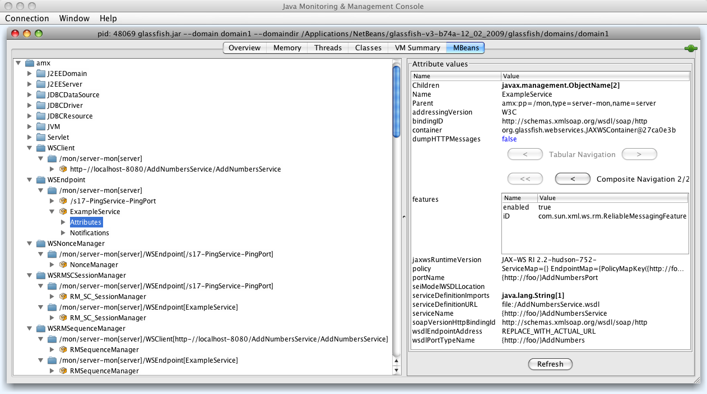

Table of Contents
JMX monitoring and management is built into Metro-based services and clients. Monitoring allows one to view the state of parts of Metro runtime system while it is in operation. Management allows one to change values dynamically. The rest of this document will refer to Metro monitoring and management as simply "monitoring".
Metro monitoring should not be confused with Metro's Web Service Configuration Management (Metro CM). Monitoring enables one to view the state of the Metro runtime, whereas Metro CM is for (re)configuring a web service.
Metro-based services have monitoring turned on by default.
Metro-based clients have monitoring turned off by default.
Clients are off by default because there is no standard way to
dispose of a client and release its resources. Metro does include a
proprietary method for disposing a proxy. Assuming you have an
AddNumbers service:
Example 20.1.
AddNumbersPortType port = new AddNumbersService().getAddNumbersPort(); ... ((java.io.Closeable)port).close();
If you enable client monitoring it is recommended you
close client proxies when they are no longer used.
Metro has two system properties for controlling monitoring scoped to the JVM:
Setting either to false will disable all
monitoring for Metro-based endpoints (i.e., web services) or
clients, respectively, in a JVM.
Metro includes a policy assertion for enabling and disabling
monitoring for specific services and endpoints. For an endpoint
(using an AddNumbersService as an example):
Example 20.3.
<service name="AddNumbersService">
<port name="AddNumbersPort" binding="tns:AddNumbersPortBinding">
<wsp:Policy>
<sunman:ManagedService
xmlns:sunman="http://java.sun.com/xml/ns/metro/management"
management="false"
monitoring="true">
</sunman:ManagedService>
</wsp:Policy>
...
</port>
</service>The ManagedService assertion is placed inside
(or referenced from) the port element in the
endpoint's WSDL (if creating a service from WSDL) or in the
endpoint's configuration file (if creating a service from
Java).
This assertion is used by both Metro CM and monitoring. See
Metro CM for the meaning and operation of the
management attribute.
Metro monitoring is turned off for the specific endpoint if
the monitoring attribute is set to
false. If the policy assertion or the
monitoring attribute is not present, or the
monitoring attribute is set to true then
monitoring is turned on for that endpoint (unless endpoint
monitoring is turned off for the JVM).
For a client the ManagedClient assertion is
used:
Example 20.4.
<sunman:ManagedClient
xmlns:sunman="http://java.sun.com/xml/ns/metro/management"
management="false"
monitoring="true"
>
</sunman:ManagedClient>This is placed inside the
<service>/<port> element of the
*.xml file corresponding to the service referenced
from the src/java/META-INF/wsit-client.xml
configuration file. (Note: the example path to the
wsit-client.xml file is where the file is located
when building using NetBeans.)
When the monitoring attribute of
ManagedClient is set to true then
monitoring will be turned on for that specific client (unless the
client JVM property is set to false).
Each endpoint is given a unique monitoring identifier (also call "root name"). That identifier is made up of (in order):
The context path (if it is available).
The local part of the service name.
The local part of the port name.
For example, suppose one creates a web application with
a context path of /AddNumbersService and a Metro
web service is deployed under that context path with an
AddNumbersService service name and a
AddNumbersPort port name. Then the identifier
will be:
When deploying in GlassFish an INFO log
message is output to GlassFish's server.log file
when the monitoring root is created. In this example the
message would be:
Example 20.6.
Metro monitoring rootname successfully set to: amx:pp=/mon/server-mon[server],type=WSEndpoint,name=/AddNumbersService-AddNumbersService-AddNumbersPort
The name part is the identifier. The
amx:pp=... part reflects that this Metro endpoint
is federated under GlassFish's AMX tree. Note: when deploying
in non-GlassFish containers then Metro monitoring will be
under a top-level node: com.sun.metro.
It is possible to give user-assigned identifiers to
monitoring endpoints. Include an id attribute in
the ManagedService policy assertion. For
example:
Example 20.7.
<sunman:ManagedService
xmlns:sunman="http://java.sun.com/xml/ns/metro/management"
management="false"
monitoring="true"
id="ExampleService"
>
</sunman:ManagedService>In this case, the INFO log will say:
Example 20.8.
Metro monitoring rootname successfully set to: amx:pp=/mon/server-mon[server],type=WSEndpoint,name=ExampleService
Each client stub is given a unique monitoring
identifier. That identifier is the endpoint address of the
service it will communicate with. For example, for a client of
the AddNumbersService above the identifier, as
shown in GlassFish's log, will be:
Example 20.9.
Metro monitoring rootname successfully set to: amx:pp=/mon/server-mon[server],type=WSClient,name=http-//localhost-8080/AddNumbersService/AddNumbersService
(Note that ':' characters have been replaced with '-'. See below for more info.)
Some characters in a root name are converted to the '-' character. This is to avoid the need to quote characters that are not legal in JMX. The regular expression used to find and replace those characters is:
It is possible that two root names can be the same. This can happen when deploying web services with the same service name and port name under different context paths in non-GlassFish containers because the context path is not available to the naming mechanism when in other containers. This can also happen when two different proxies are communicating with the same service.
When root names clash, then the rootname has
-<N> appended, where N is a unique
integer.
To show what monitoring information is available we will use two tools:
Neither of these tools is officially supported by GlassFish nor Metro. However, they are useful for browsing the mbeans in a JVM.
The following screenshot shows one client and two services running inside the same instance of GlassFish.
Figure 20.1. Monitoring - One client and two services running inside the same instance of GlassFish
|  |
Metro has five mbean types:
WSClient
General information for a client.
WSEndpoint
General information for an endpoint.
WSNonceManager
Nonce manager used by endpoints to prevent replay attacks.
This only exists on the endpoint side, scoped per-endpoint.
WSRMSCSessionManager
Manages Reliable Messaging (RM) and/or Secure Conversation (SC) sessions.
This only exists on the endpoint side, scoped per-endpoint.
WSRMSequenceManager
Manages Reliable Messaging sequences.
This exists on both client and endpoints sides, scoped per-stub and per-endpoint respectively.
In the screenshot there is
one client that is connected to the
AddNumbersServicetwo endpoints: a
/s17...service and anExampleServiceone
WSNonceManagerassociated with the/s17...servicetwo
WSRMSCSessionManagers, one for each of the two servicestwo
WSRMSequenceManagers, one associated with the client, the other withExampleService.
Using Jmxterm you can find these same mbeans (note: the output
of beans show a lot of beans, this has been edited to
only show Metro's mbeans):
Example 20.11.
java -jar <Jmxterm-jar> Welcome to JMX terminal. Type "help" for available commands. $>open localhost:8686 #Connection to localhost:8686 is opened $>beans ... #domain = amx: amx:name=/s17-PingService-PingPort,pp=/mon/server-mon[server],type=WSEndpoint amx:name=ExampleService,pp=/mon/server-mon[server],type=WSEndpoint amx:name=NonceManager,pp=/mon/server-mon[server]/WSEndpoint[/s17-PingService-PingPort],type=WSNonceManager amx:name=RMSequenceManager,pp=/mon/server-mon[server]/WSClient[http-//localhost-8080/AddNumbersService/AddNumbersService],type=WSRMSequenceManager amx:name=RMSequenceManager,pp=/mon/server-mon[server]/WSEndpoint[ExampleService],type=WSRMSequenceManager amx:name=RM_SC_SessionManager,pp=/mon/server-mon[server]/WSEndpoint[/s17-PingService-PingPort],type=WSRMSCSessionManager amx:name=RM_SC_SessionManager,pp=/mon/server-mon[server]/WSEndpoint[ExampleService],type=WSRMSCSessionManager amx:name=http-//localhost-8080/AddNumbersService/AddNumbersService,pp=/mon/server-mon[server],type=WSClient ...
The following screenshot shows the top-level information available for each client:
Children: the
WSRMSequenceManagerthat is used by this client.Container: the container in which the client is deployed---in this case: GlassFish. Note that the actual container object has not been instrumented with monitoring so it Java class@address is printed.
Name: the root name given for this client.
Parent: show the
WSClientunder the AMX mbean.qnameToPortInfoMap: an internal map used by the runtime system.
serviceClass: The SEI (service endpoint interface).
serviceName: From the WSDL.
wsdlDocumentLocation: Where the WSDL used to create the client lives. (Note: when a service is created using NetBeans it makes a local copy of the WSDL, therefore the example shows a
fileinstead of anhttplocation.)wsdlService: an internal data structure that is not instrumented.
To see these attributes in jmxterm:
Example 20.12.
$>bean amx:name=http-//localhost-8080/AddNumbersService/AddNumbersService,pp=/mon/server-mon[server],type=WSClient $>info #class name = WSClient # attributes %0 - Children ([Ljavax.management.ObjectName;, r) %1 - Container (java.lang.String, r) %2 - Name (java.lang.String, r) %3 - Parent (javax.management.ObjectName, r) %4 - qnameToPortInfoMap (javax.management.openmbean.TabularData, r) %5 - serviceClass (java.lang.String, r) %6 - serviceName (java.lang.String, r) %7 - wsdlDocumentLocation (java.lang.String, r) %8 - wsdlService (java.lang.String, r) $>get Name Name = http-//localhost-8080/AddNumbersService/AddNumbersService;

Children: in this example there are two other mbeans associated with the example service.
addressingVersion: generally this will be
W3Cunless explicitly using a different version of addressing.bindingID: the namespace for the type of binding used for the service.
dumpHTTPMessages: when set to
truethen HTTP messages received and sent by this service are "dumped" into the log file. It is possible to dynamically set this value. Just click on the value, type in the value and hit return using JConsole. In jmxterm:Example 20.13.
$>bean amx:name=ExampleService,pp=/mon/server-mon[server],type=WSEndpoint $>set dumpHTTPMessages true
features: the "features" (see the JAX-WS specification) used in this endpoint. Using jmxterm (assuming the bean has been set as in dump above:
Example 20.14.
$>get features features = [ { enabled = true; iD = http://www.w3.org/2005/08/addressing/module; }, { enabled = true; iD = com.sun.xml.ws.rm.ReliableMessagingFeature; } ];jaxwsRuntimeVersion: the version of the JAX-WS specification which is implemented by Metro.
policy: A representation of the policy used by the endpoint. The entire policy is more easily viewed using jmxterm:
$>get policy. Note: the format of the policy output can and will change.portName: The WSDL port name.
seiModelWSDLLocation: not currently supported.
serviceDefinitionImports: a list of any of files imported by the main WSDL file for this service.
serviceDefinitionURL: the service's WSDL.
serviceName: The WSDL service name.
soapVersionHttpBindingId: The namespace of the HTTP binding.
wsdlEndpointAddress: this generally will not contain the real address since it depends on a client calling the service to exist and the value is taken before that happens.
wsdlPortTypeName: The WSDL port type.
This allows one to examine the contents of a nonce manager of a specific service. Using jmxterm:
Example 20.15.
$>bean amx:name=NonceManager,pp=/mon/server-mon[server]/WSEndpoint[/s17-PingService-PingPort],type=WSNonceManager
$>get NonceCache
NonceCache = {
maxNonceAge = 900000;
nonceCache = {
( F2jz9MkcI9Gcshk1K0snDPhC ) = {
key = F2jz9MkcI9Gcshk1K0snDPhC;
value = 2009-12-03T22:21:39Z;
};
};
oldNonceCache = {
};
scheduled = true;
wasCanceled = false;
};Examine reliable messaging and secure conversation keys and sessions for a specific service. Using jmxterm:
Example 20.16.
$>bean amx:name=RM_SC_SessionManager,pp=/mon/server-mon[server]/WSEndpoint[ExampleService],type=WSRMSCSessionManager
$>get keys
keys = [ uuid:8593cea6-9328-41fe-986a-abf0745c4470, uuid:0987fa78-cd7d-4c1c-9ec2-e849b7f68881 ];
$>get sessions
sessions = [ {
creationTime = 1259879310907;
lastAccessedTime = 1259879310907;
securityInfo = {
creationTime = null;
expirationTime = null;
externalId = null;
identifier = null;
issuedTokenContext = null;
secret = null;
};
sessionKey = uuid:8593cea6-9328-41fe-986a-abf0745c4470;
}, {
creationTime = 1259866808000;
lastAccessedTime = 1259866808000;
securityInfo = {
creationTime = null;
expirationTime = null;
externalId = null;
identifier = null;
issuedTokenContext = null;
secret = null;
};
sessionKey = uuid:0987fa78-cd7d-4c1c-9ec2-e849b7f68881;
} ];boundSequences: generally an inbound sequence will be bound to an outbound sequence so that requests and replies are reliable. This table gives the sequence identifiers for those pairs.
concurrentlyOpenedInbound: the number of inbound sequences opened.
persistent: true if using Metro's persistent reliable messaging.
sequences: a map from a sequence identifier to information on that sequence. In jmxterm:
Example 20.17.
$>bean amx:name=RMSequenceManager,pp=/mon/server-mon[server]/WSEndpoint[ExampleService],type=WSRMSequenceManager $>get sequences sequences = { ( uuid:5145de4e-618b-4da3-9004-c715770934d2 ) = { key = uuid:5145de4e-618b-4da3-9004-c715770934d2; value = { ackRequested = false; boundSecurityTokenReferenceId = null; closed = false; expired = false; hasUnacknowledgedMessages = true; id = uuid:5145de4e-618b-4da3-9004-c715770934d2; lastActivityTime = 1259880084724; lastMessageNumber = 1; state = CREATED; }; }; ( uuid:d16b0fb9-7e80-4598-a3e2-789c9bac9474 ) = { key = uuid:d16b0fb9-7e80-4598-a3e2-789c9bac9474; value = { ackRequested = false; boundSecurityTokenReferenceId = null; closed = false; expired = false; hasUnacknowledgedMessages = false; id = uuid:d16b0fb9-7e80-4598-a3e2-789c9bac9474; lastActivityTime = 1259880084724; lastMessageNumber = 1; state = CREATED; }; }; };uniqueEndpointId: An identifier used by the reliable messaging implementation. Note: this is not related to client and endpoint root name identifiers
The AMX mbean is created lazily. Therefore, if one deploys an
endpoint in GlassFish and then looks for the Metro
WSEndpoint mbeans using JConsole there are times where
the AMX mbean does not appear. To activate it start up the asadmin GUI
or CLI. Or use jmxterm and issue its domains
command.
In some cases Metro endpoint mbeans will not appear until the endpoint receives its first client invocation.
WSClient mbeans can appear and disappear quickly if
the stub is just used for one call then closed immediately. A stub
that uses reliable messaging or secure conversation generally stays
active longer since it will most likely be used for multiple
calls.